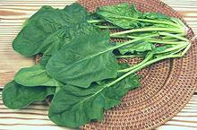
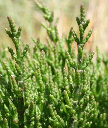

SAFARI
Users
Amaranth Greens
- [subfamily Amaranthoideae]
Amaranth Greens[Red Spinach (Asian markets); Chinese spinach; Hinn Choy, Hen Choy, Yin Tsoi (China), Amaranthus. dubius, A. tricolor | Quelite Quintonil (Mexico); Green (Nigeria); Tete (Yoruba); Aleho (Hausa);Common Amaranth, Red-root Amaranth, Redroot Pigweed; Amaranthus hybridus syn. Amaranthus retroflexus]
Amaranthus is a worldwide genus of leafy herbs. There were
once distinct American and Asian species, but some Asian species
and some American species are now worldwide food crops. African
species are not as widely dispersed. Amaranth greens are similar to
spinach in use but not as fragile so tolerate rougher handling and
longer cooking times. They are less tart than spinach and tend to
be slightly mucilaginous, so they have a thickening effect in soups.
Details and Cooking.
Amaranth - Seeds[Kiwicha (Inca), Amaranthus cruentis,A. hypochondriaca, A. caudatus]
Amaranth was of great importance to the Incas because it grew well
in the high mountainous regions of Peru and was highly nutritious.
It has more recently become of some importance in the Himalaya region
of Asia for similar reasons. Spanish conquerors of Peru were very
disturbed by its use in a ritual too close to Christian communion for
comfort, and banned its cultivation. The crop has recently gone back
into production because of its nutritional attributes and it is now
widely available.
Details and Cooking.
Celosia / Lagos Spinach[Quail Grass; Efo Shoko, Shokoyoto, Soko Yokoto (Nigeria); Céosie, Céosie argentée, Crète de coq (French); Plumed cockscomb, Cresta de gallo; Celosia argentea]
While its African origin is disputed, this plant, very similar to
Amaranth, is much used in West and Central Africa as greens. Young
flower heads are also often incorporated with the leaves. It is also
eaten as greens in Southeast Asia, South America and the West Indies.
Fancy decorative varieties have been developed with complex flower
heads.
Details and Cooking.
Photo by J.M.Garg distributed under license Creative
Commons
Attribution-ShareAlike v3.0.
Mchicha[Mchicha (Swahili); Terere (Kikuyu): subfamily Amaranthoideae -or- subfamily Chenopodioideae] This is a very important green in East Africa, but what is it actually?
According to a large Tanzanian vegetable wholesaler, "mchicha" applies
equally to Amaranth Greens and Spinach Greens. A reliable Tanzanian recipe
writer calls for "Large-Leaf Spinach" claiming it as a cousin of
"traditional spinach". This may be Chard.
Details and Cooking.
|
Beets
- [genus Beta of subfamily Chenopodioideae]
Beet - Red[Beta vulgaris]
A cultivated variety developed for edible roots, red beets are
particularly appreciated in the Slavic countries but also throughout
Europe and North America. The color comes from a purple pigment,
betacyanin, and a yellow pigment, betaxanthin, which are acid stable
so beets can be pickled. Beets are high in boron, a mineral important
to production of human sex hormones, and have had an aphrodisiac
reputation since Roman times. Beets are very sweet with a sugar
content that can reach 10%. The photo specimens were typically 3-1/2
inches in diameter, weighed 11 ounces each, and provided an additional
7 ounces of edible greens and stems.
Details and Cooking.
Beet - Golden][Beta vulgaris
This cultivar is useful when you need to avoid the red pigments of
regular beets getting all over everything. I find them a little less
sweet and having less beet flavor than red beets so I'd use them only
when the color is important. For cooking see
Red Beets.
Beet - Chioggia[Beta vulgaris]
This Italian beet, named for a town near Venice, is sweeter than any
but the sugar beet. From the outside it looks like a red beet, but
internally it has alternating layers of red and white giving it a
candy stripe appearance. The colors run together a bit when cooked.
For cooking see
Red Beets.
Beet - Sugar[Beta vulgaris]
While it was long known sugar could be obtained from beets, beet sugar
production didn't really start until the Napoleonic wars when the
British cut off cane sugar deliveries to Europe. Sugar beets produce
sucrose, nearly identical to sugar from cane, and have a sugar content
as high as 20%. I say "nearly identical" because beet sugar has been
shown not to work as well for Crème Brûlée.
Photo USDA = Public Domain
Chard[Swiss Chard, Silverbeet, Spinach Beet; Beta vulgaris var. cicla] This is a variety of beet greens developed for edible leaves, and is a vegetable deserving of wider appreciation. It is available in several colors, some of which are shown in the photo, but red and white are most common in markets. Leaves are cooked similar to spinach and the stems similar to asparagus. The photo specimens were about 15 inches long, but they can exceed 18 inches. There are varieties with thinner, more tender stems, but those marketed in North America are uniformly of the wide stemmed varieties. Although never much grown in Switzerland, these greens were called
"Swiss Chard" after a Swiss botanist, to differentiate them from
Cardoons, which were also called "Chard". Cardoons are no longer
called Chard, so the "Swiss" part is now redundant.
Details and Cooking.
Palak[Indian Spinach; Beta vulgaris var benghalensis]\
This is what Indian recipes mean by "spinach". Popular varieties
are Pusa All Green and Pusa Jyoti. Über-expert Julie Sahni
recommends using the closely related
Chard in any Indian recipe calling
for "Spinach". If you can't get Perpetual Spinach Chard (see below)
use a white stemmed version of regular chard for correct color. If
you don't have chard Julie recommends chopping in one small green bell
pepper per pound of regular spinach to improve the flavor, but chard
is very common in North American markets now.
Photo by Rameshng distributed under license Creative
Commons
Attribution-ShareAlike v3.0 Unported.
Perpetual Spinach Chard[Beta vulgaris var. cicla]
It isn't spinach, and it's not perpetual, but it's probably the ideal
substitute for Indian Palak (see above). Milder than regular spinach,
it's of particular value in warmer climates because it's far slower to
bolt in warm weather. Large lower leaves can be harvested frequently -
in warmer climates even through the winter. It will definitely bolt
(send up a flower stalk and stop producing large leaves) in the second
year. It is not common, even in farmer's markets here in Southern
California, but seeds are easily available for gardeners.
Sea Beet[Beta vulgaris subspecies maritima]
A leathery leafed wild beet native to the coasts of Europe and the British
Isles. Some say this is the plant from which domesticated beets were
derived, but others say it was another wild beet, beta vulgaris vulgaris.
In the Spring, young leaves and shoots are eaten both raw and cooked but
become unpalatable later in the season.
Photo by H.Zell distributed under license Creative Commons
Attribution ShareAlike v3.0.
|
Blitum
- [genus Blitum of subfamily Chenopodioideae]These herbs were formerly placed in genus Chenopodium, but are now placed in their own genus. You may still find any of them listed as Chenopodium (species) rather than Blitum (species).
Good King Henry[Lincolnshire spinach, Markery, English mercury, Mercury goosefoot; Blitum bonus-henricus] This is a perennial herb which sprouts multiple shoots in the spring.
It was formerly an important leaf vegetable in Central and Southern Europe,
including the British Isles, but is now found only in cottage gardens.
Shoots can be cooked like Asparagus and mature leaves similar to Spinach.
Photo by distributed under license Creative Commons
Attribution ShareAlike v4.0 International.
California Goosefoot[Indian Lettuce (not unique); Blitum californicum] This perennial herb is native to California and Baja California. It was
formerly important to the native peoples of the region as food and
medicinal. The seeds were used to make a form of bread and the leaves were
cooked as a vegetable.
Photo by U.S. National Parks Service = Public Domain.
Povertyweed[Blitum nuttallianum] This fleshy annual herb is native to North America, from Alaska to
New England, and south into Mexico, and also in Argentina. It exists in
many environments, but prefers wetness. It was formerly important to the
native peoples of the region as food and medicinal. Southern tribes ground
the seeds and combined them with Mesquite beans and Corn. Leaves, roots
and young stems are all edible when cooked.
Photo by Matt Lavin distributed under license Creative Commons
Attribution ShareAlike v2.0 Generic.
Leafy Goosefoot[ Blitum virgatum sym. Chenopodium foliosum] This annual herb is native to Eurasia, and introduced elsewhere. The
leaves and red inflorescences are edible, and the leaves are used the same
as Spinach. It was formerly a food crop in Europe, and there is some
interest in re-introducing it to cultivation.
Photo by WildBoar contributed to the Public Domain.
Strawberry Goosefoot[Strawberry Blite, Blite Goosfoot; Blitum capitatum] This plant is native to the United States and Canada, found mostly in
moist mountain valleys. The small red fruits are edible and somewhat like
strawberries. The leaves can be eaten raw of cooked, but in moderation, as
they contain Oxalates, similar to spinach.
Photo by Derek Ramsey distributed under license Creative Commons
Attribution ShareAlike v2.5 Generic.
|
Goosefoots
The Chenopodia (genus Chenopodia of subfamily Chenopodioideae) are a large and diverse family of often weedy plants some of which have significant culinary importance.
Epazote[Wormseed, Jesuit's Tea, Mexican Tea, Herba Sancti Mariæ, Chenopodium ambrosioides] A common weed in southern Mexico, Central and South America, Epazota is now grown in the warmer parts of North America and sometimes becomes an invasive weed here. Its main culinary use is for flavoring black beans and to a lesser extent other recipes from southern Mexico and Central America. It is reputed to prevent flatulence from eating beans and to relieve a number of medical conditions. An oil extracted from the seeds kills intestinal worms and is also an antispasmodic and abortifacient. The smell of epazote is quite strong but extremely difficult to
describe. Leading spice expert Gernot Katzer says it smells to him
like epazote.
Details and Cooking.
Goosefoot, White[Lamb's Quarters, Fat Hen; Bathua or Bathuwa (Hindi); Vastuccira (Malayalam); Paruppukkirai (Tamil); Chenopodium album ]
Native to Europe and Asia, this is now a common weed all over North
America (and much of the rest of the world), particularly on disturbed
ground. It is a food crop in India, particularly in the north, and
also in parts of Africa where it has been introduced. It is easily
recognized by the leaf shape and the white powdery underside of the
leaves, which repel water. The leaves and young shoots are used in
soups and curries, similarly to spinach, but the flavor is different
and the leaves are tougher. It produces copious seeds, which are high
in quality protein, vitamin A, calcium, phosphorus, and potassium.
The seeds are harvested in parts of India and Africa.
Huauzontle[Chenopodium nuttalliae]
Native to Mexico, this close relative of Quinoa was once a major
food crop in the region, but largely displaced by corn. Today its
immature seed heads are most commonly cooked as a vegetable, but
the seeds are still harvested in parts of Mexico and ground into
flour. They don't have the coating of bitter saponins that must be
removed from Quinoa before cooking, but that makes them vulnerable
to birds, further incentive to harvest at the vegetable stage. One
popular recipe uses Huauzontle bound with flour and molded around a
bar of Mexican cheese, then coated in a fluffy egg batter, fried
and served over tomato sauce, just as are Chilis Rellenos.
Details and Cooking.
Kañiwa[Kañahua, Kañagua, Quitacañigua, Ayar, Cuchiquinua (Quechua); Cañiwa; (Spanish); Chenopodium pallidicaule]
Native to southern Peru and Bolivia, this is an incompletely
domesticated relative of Quinoa.
It lacks the annoying bitter saponins but it doesn't ripen evenly so is
difficult to harvest, and could benefit from some selective breeding.
It is, non the less, important to the people of the high plain of the
Andes, as it grows well at high altitudes, and is drought and cold
tolerant. It is high in protein and that protein is well balanced for
human nutrition. It is also high in calcium, zinc, iron, antioxidants
and phenolics. It is brightly colored through most of its growing
season.
Photo from Crops for the Future distributed under
license Creative Commons
Attribution ShareAlike v3.0 Unported.
Quinoa[(from Quechua "kinwa"); Chenopodium quinoa]
Pronounced "keenwa", this plant is native to the Andean region of
South America. It is grown mostly in Peru and Bolivia but some
production has been started in North America because of its reputation
as a health food. While the greens are edible, they are rarely
available and the seeds are the part generally used. There are many
varieties with differences in coloration, including seed coloration.
Most sold in North America is white, but the tricolor in the photo
is also sold here.
Details and Cooking
|
Spinach
[subfamily Chenopodioideae] Quite a few very unrelated plants are called "Spinach" in culinary circles - here we list only those that really are "Spinach".
Spinach [Spinacia oleracea] A native of Southwest Asia, spinach is delightful, if properly handled and cooked, but is easily abused. Many people know it only as a stringy lump of overcooked mush. Cultivars are Savoy, the most common fresh spinach, Smooth Leaf, used for frozen and processed spinach (easier to wash) and Semi-savoy, a sort of all-purpose spinach. Baby Spinach is sold in plastic bags and boxes for the yuppie salad trade - just about all the leaves are the almost flavorless oval form. Spinach's reputation for very high iron content was due to an
analyst slipping a decimal point in 1870, not corrected until 1937.
It still has a higher iron content than most vegetables but not by
so spectacular a measure. Spinach is also high in calcium but a high
oxalate content inhibits absorption of both calcium and iron into the
body. On the other hand it is high in Vitamins A, C and E, folic acid
and antioxidants.
Details & Cooking.
Taiwan Spinach[presumably Spinacia oleracea] This spinach is very much like our regular spinach, but a lot larger and considerably milder. The photo specimens were 22 inches long, but a few leaves were more than 24 inches. Taiwan spinach is stemmy - but the stems are the most flavorful part and should always be included in the recipe. It is a very fine vegetable for use in stir fries and soups, and can be used in place of regular spinach. This spinach is often available in Asian markets here in Los Angeles.
The photo specimens were from 168 Market on Valley Blvd. in Alhambra. Do
not confuse this spinach with Water Spinach (Swamp Cabbage) often called
"Chinese Spinach" by recipe writers. That is a very different plant,
in the morning glory family.
Details & Cooking.
|
Saltworts
[subfamilies Salsoloideae, Salicornioideae and Camphorosmoideae] These are very salt tolerant plants. Genera of subfamily Camphorosmoideae were formerly in subfamily Salsoloideae but have been broken out as a separate subfamily. Note: All Saltworts are not in this group, there are also the two species of Batis which are related to cabbages.
Agretti[Barba di frate, Liscari sativa, Lischi, Lischeri, Agretti (Italy); Opposite-leaved saltwort, Oppositeleaf Russian thistle, Barilla plant (English); Salsola soda of subfamily Salsoloideae]
This succulent shrub, native to the Mediterranean Basin, grows to about
2-1/4 feet high, and is so salt tolerant it can be irrigated with
seawater. It was once very important to the production of glass, but is
now of only culinary value, particularly in Italy. It can be eaten raw,
but is more commonly simmered until it is crisp tender, sometimes with
bacon and onions. It is said to taste much like spinach, but more
interesting. It is also used as a companion plant for tomatoes and
peppers when they are grown in salty soil, as it desalinizes the
soil.
Photo by Stefan Proud distributed under license
Creative Commons
Attribution-ShareAlike v3.0 Unported.
Okahijiki[(Japan) Salsola komarovii of subfamily Salsoloideae]
This salt tolerant plant is native to Japan, Korea, China and Eastern
Russia. from it's salty taste, the Japanese name means "land seaweed".
Leaves and young shoots are cooked as a vegetable.
Photo by Aomorikuma distributed under license
Creative Commons
Attribution-ShareAlike v3.0 Unported.
Samphire[Marsh Samphire, Common Glasswort, Salicornia europaea of subfamily Salicornioideae]
A salt tolerant plant that grows near the sea, samphire has long been
gathered and eaten in salads or pickled, particularly in England. It is
usually steamed or simmered, then the flesh is pulled off the fibrous
core. Dressed with butter or olive oil, it is said to taste similar to
young spinach stems or asparagus. It is very salty, so cooked without
salt. It is not to be confused with Rock samphire
(Crithmum maritimum) mentioned by Shakespeare - while used
similarly that one is not an amaranth.
Photo by Liné1 (cropped) distributed under license
Creative Commons
Attribution-ShareAlike v3.0 Unported.
American Glasswort[Sea Beans, Beach Asparagus, Pickleweed, Marsh Samphire (USA); Samphire Greens, Crow's foot Greens, Sea Asparagus, Pousse-pierre, Passe-pierre, Pousse-pied (Canada); Salicornia virginica syn Salicornia depressa of subfamily Salicornioideae]
This wetlands plant is native to both Atlantic and Pacific coasts of
North America from Canada to Mexico, living in salt marshes. It also
lives in the alkaline flats of Utah, near salt springs in New York,
and in the alkali marshes of Manitoba, Canada. It is usually just
blanched for 1 minute so it is still crunchy, then dressed as a salad.
It may also be used in stir fries and the like, or pickled.
Photo by Franco Folini distributed under license
Creative Commons
Attribution-ShareAlike v2.0 Gemeric.
Burningbush - Tonburi[Mexican Firebrush, Summer Cypress, Mock-cypress, Kochia, Belvedere; Bassia scoparia of family Camphorosmoideae ]
Native to Eurasia, this plant now appears in grasslands and desert
shrub environments in North America. In Japan, it is popular in large
decorative plantings for its green and red colors. In Akita Prefecture,
the seeds, called "Tonburi" are specially prepared as a food garnish.
It is described as "Land Caviar", "Field Caviar" and "Mountain Caviar"
due to its similar texture. The seeds are dried, boiled, soaked and
then hand rubbed to remove the skin.
Photo of shrub by Moonik, photo of tonburi by Morigen -
both distributed under license Creative Commons
Attribution-ShareAlike v3.0 Unported.
Tumbleweed[Russian Thistle, Windwitch, Saltwort; Salsola tragus of subfamily Salsoloideae] Now symbolic of empty spaces in the American West, tumbleweeds were actually brought over by Ukrainian farmers with flax seed, thus the more formal name, Russian Thistle. Please note that many Ukrainians may take offence at being called "Russians". It took the plant only about 25 years to spread from South Dakota to the Pacific Coast. The plant is roughly spherical and in the fall it dries and breaks off the root to be driven many miles by the wind, scattering seeds the whole way. Tender leaves and shoots of freshly sprouted plants are eaten in salads, stir fries, or as pot herbs. They are safe in moderate quantity but have too much oxilate and nitrate to be a major culinary item. Back in the late 1950s, every vacant lot in Burbank California was
overgrown with tumbleweeds. People would spray paint dried ones white
and stack them up to make Southern California snowmen around Christmas
time. Today they have been so thoroughly eradicated I had to buy a
picture of one for this page - but then, the vacant lot has also been
eradicated from Burbank.
Photo © i0109
Umari Keerai [Chicken Feet (Karala); Salicornia brachiata of subfamily Salicornioideae]
Locally called "Chicken Feet" for obvious reasons, this salt tolerant
plant is native Sri Lanka and the east cost of India north to Bengal.
It is cooked and eaten as a green, and also pickled. This plant is
currently under intensive study in Karala in southern India to
develop solutions for South Asian farmers whose fields will be
contaminated with salt water as global warming raises sea levels.
In appearance, it is the same as Salicornia europaea, so
we used a photo of S. Europaea as we found no suitable photos
of S. brachiata.
Photo by Marco Schmidt distributed under license
Creative Commons
Attribution-ShareAlike v2.5 Generic.
|
Health & Nutrition
Amaranth greens all have similar health considerations differing only in degree. While they are high in iron and calcium they are also high in oxalate which partially inhibits absorption of those nutrients by the body. They are, however, also rich in vitamins A, C and E, folic acid and antioxidants which the oxalate does not inhibit.
Other than absorption, oxalate can contribute to formation of kidney stones and gout. It is only one of many contributing factors and probably not the strongest, but it's probably not a good idea to make these vegetables a major part of your diet.
Edible amaranth roots and seeds do not carry significant amounts of oxalate.
Amaranth greens are high in nitrates so it may not be wise to reheat them as leftovers. Bacteria which grow under high nitrate conditions produce enzymes that convert nitrates to nitrites. Nitrites can be dangerous to infants less than a year old and particularly less than 6 months old. Older children and adults are not bothered by small quantities of nitrites.
Nitrites can form into possibly carcinogenic nitrosamines in the stomach, but the level of risk, if any, is not established. The conversion is inhibited by vitamin C, which is strongly present in amaranth greens.